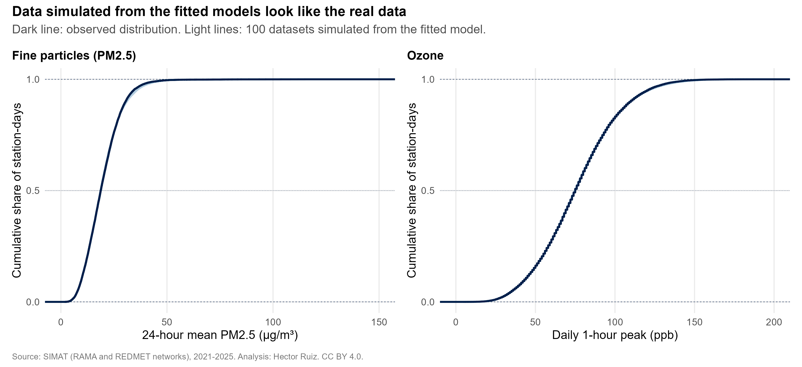
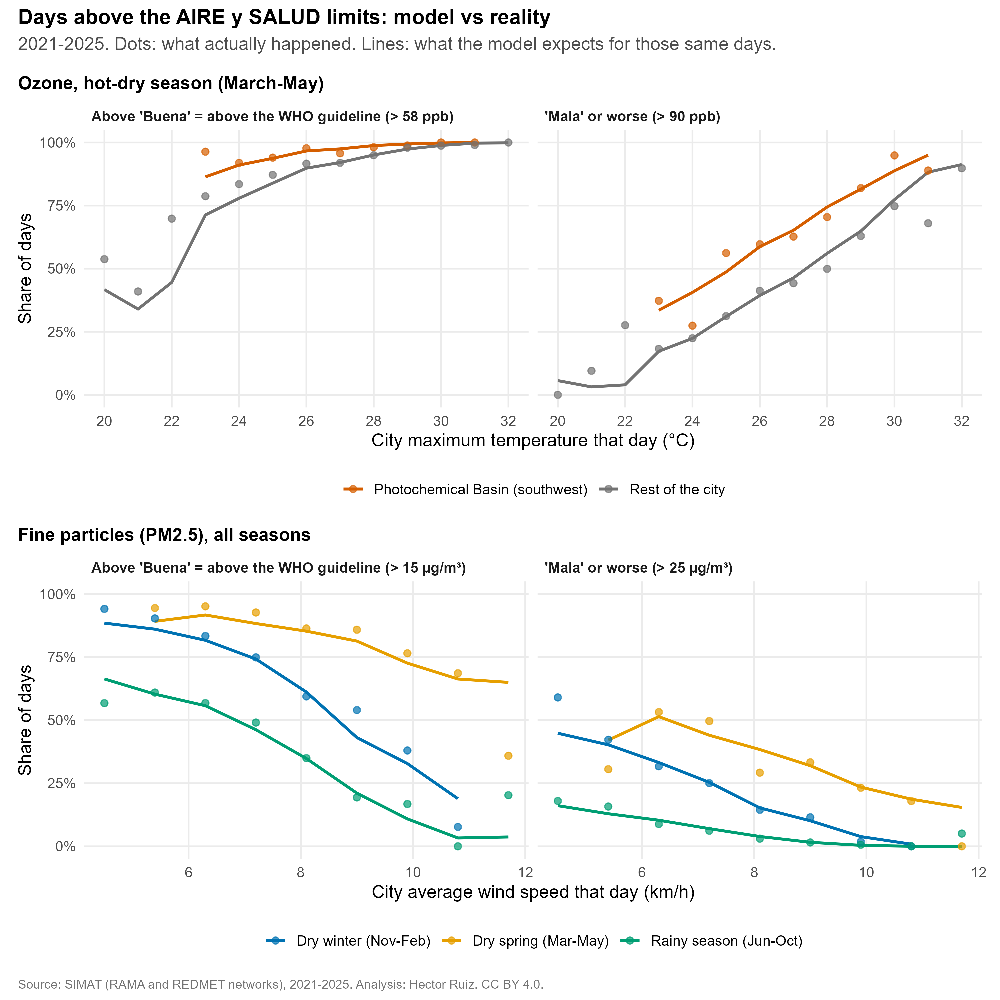
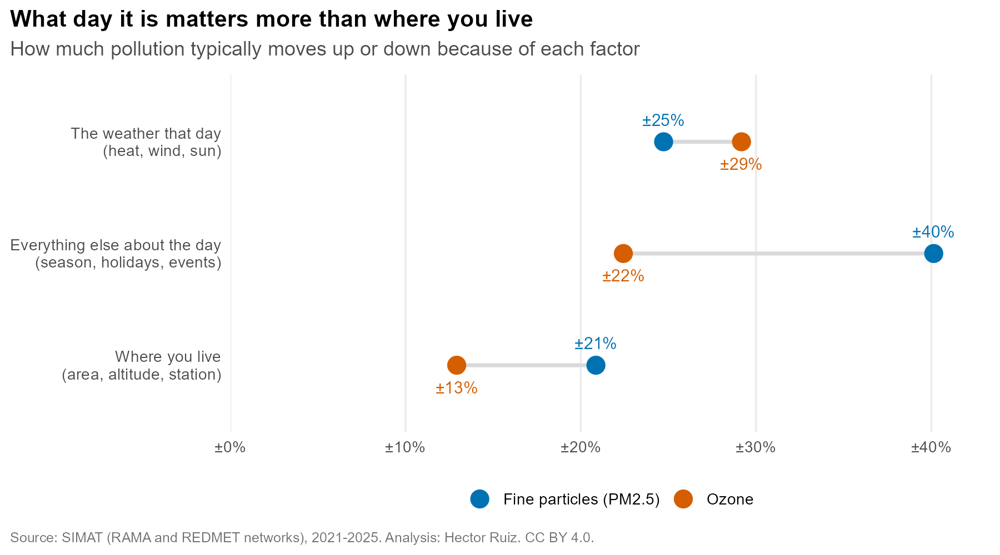
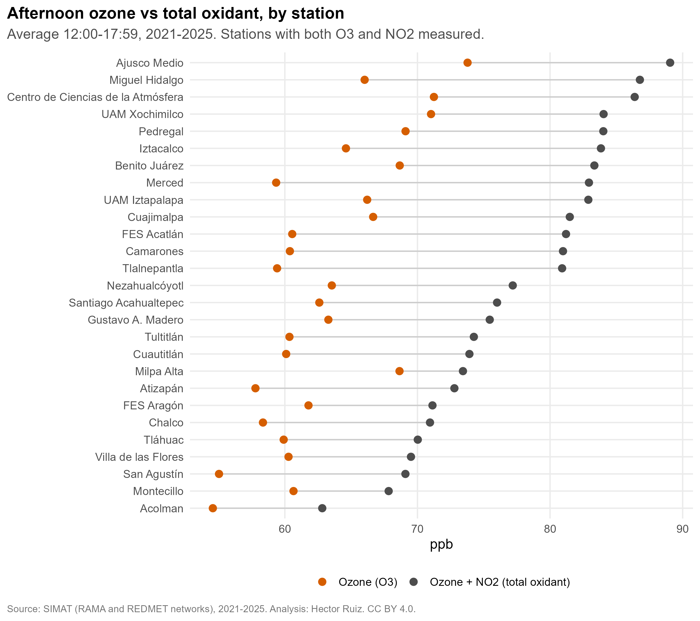

This appendix explains how the numbers in the article were produced, in roughly the order a skeptical reader would ask about them. It is not a replication package, but the code that matters is shown in folded blocks.
The analysis is observational. The model describes how pollution moves with weather, calendar, and place; it does not establish causes or estimate health effects. Every health figure in the article comes from published research, applied to these data as described in the section on health numbers.
What each claim rests on
Claim in the article
Rests on
Strength
Main caveat
Particles peak mid-morning, ozone early afternoon; evenings have about 30% fewer particles
Hourly city averages
Strong
City average, not your street
Hot, sunny spring days bring more Mala ozone days
Daily shares by temperature; model about +7% per °C
Strong
Heat and sun move together
Rainy season: particles about a third lower, ozone about as high as in winter
Seasonal city averages
Strong
Season, not rain itself
Wind clears particles about half as well in spring
Model, checked against observed days
Moderate
Model runs high on the worst spring days
January 1 is the dirtiest day for particles
Daily data, 2022-2025
Strong
Four winters
Quiet Sundays cut exhaust far more than particles
Morning-rush averages, block bootstrap
Strong
Mornings only
The day matters more than the neighborhood
Model variance split
Strong in direction
The split is approximate
Southwest ozone +17%, hill particles -22%
Model, by station
Moderate to strong
About ±10% for a place without a station
The center’s low ozone is partly hidden by exhaust
Ozone + NO₂ by station
Moderate
27 stations, descriptive
Aceptable days carry almost half the long-term toll
Station data
Moderate
Assumes harm grows linearly
About 1.5 years of life expectancy
Published estimates × station data
Indicative
Range 0.5 to 2.5 years; borrowed from other countries
Exercise away from traffic and around ozone; box-fan filter; fitted masks
Published studies
Moderate
Measured in other cities; fit and seal matter
“Strong” means the claim follows directly from the measurements or holds under every check here. “Moderate” means it depends on the model or on studies done elsewhere. “Indicative” means the size is uncertain, though the direction is not.
What data, and what exactly was measured?
All monitoring data are hourly, from January 2021 to December 2025, from Mexico City’s air quality monitoring system (SIMAT):
Pollutants: ozone (O₃) and fine particles (PM2.5) from the Red Automática de Monitoreo Atmosférico (RAMA). Its other gases (NO, NO₂, NOx, CO, PM10) were used only for descriptive checks.
Stations: altitude and land cover from SIMAT’s Caracterización del Entorno Físico, which I also used to group stations into five urban environments.
The unit of analysis is the station-day, with daily metrics as in the official daily report of NOM-172-SEMARNAT-2023: the day’s highest one-hour value for ozone, and the 24-hour mean for PM2.5. A day counts only if at least 18 of its 24 hours are valid (SIMAT’s 75% rule).
PM2.5 (24-hour mean, µg/m³)
Ozone (daily 1-hour peak, ppb)
Station-days
23,185
46,910
Stations
20
34
Median
18.8
75
95th percentile
34.2
120
Maximum
115.1
187
The industrial north has eight ozone stations but only one PM2.5 station, so anything said about particles there rests on a single site.
Can the raw files be trusted as published?
Mostly, after three corrections. None of them is documented by SIMAT; each was inferred from the data.
Hour labels. SIMAT labels each hourly average by the end of its hour; everything here is converted to start-of-hour labels. The 2025 pollutant file appears to label the start instead: its ozone daily cycle peaks and bottoms out exactly one hour earlier than in 2023 and 2024, so it was treated as start-labeled.
“Stuck at 1” weather readings. Some sensors report exactly 1 (1 °C, 1%, 1 m/s) for days or months, often in all variables at once; one central station sat at 1 °C for more than 5,000 hours. The value 1 seems to work as an undocumented “no data” code. A real reading can be 1 now and then, but not three hours in a row, so runs of three or more were set to missing. That removed about 4-6% of the weather readings, almost none of them in 2023, which suggests the pattern comes from how each year’s file was produced.
Show the code
# 01_tidy.R: remove runs of 3+ consecutive hours at exactly 1 (per station)clean_met = clean_met %>%arrange(id_station, date_day, hour) %>%group_by(id_station) %>%mutate(run_id =consecutive_id(value)) %>%# same id for neighboring equal valuesgroup_by(id_station, run_id) %>%mutate(value =if_else(value ==1&n() >=3, NA_real_, value)) %>%ungroup()
UV-A. Where SIMAT publishes a year twice, the copy without stuck values was used. No station reported UV-A from June 1 to July 6, 2024; those 36 days take the same-date average of the other years and are flagged.
Weather was often missing. How was that handled, and does it bias anything?
Weather gaps are the biggest data problem here. Most are dead station-years rather than scattered hours, and eight ozone stations have no weather sensor at all. Still, between 14 and 33 stations reported weather every single day.
Gaps of up to three hours are interpolated; longer gaps take the same-hour average of the other stations in the same urban environment, or failing that, of the whole city. Station-days with any borrowed hour (46% for PM2.5, 58% for ozone) are flagged, and the flag enters the model; its estimated effect is small.
Show the code
# 02_build_daily_model_data.R# Step 1: short gaps (<= 3 hours) by straight-line interpolationdata = data %>%arrange(id_station, id_parameter, datetime) %>%group_by(id_station, id_parameter) %>%mutate(across(c(TMP, WSP, RH), ~ zoo::na.approx(.x, maxgap =3, na.rm =FALSE))) %>%ungroup()# Steps 2 and 3: same-hour average of the station's urban environment, then the citystation_weather = data %>%distinct(date_day, hour, id_station, archetype, TMP, WSP, RH)arch_hourly = station_weather %>%group_by(date_day, hour, archetype) %>%summarize(z_TMP =mean(TMP, na.rm =TRUE), z_WSP =mean(WSP, na.rm =TRUE),z_RH =mean(RH, na.rm =TRUE), .groups ="drop")city_hourly = station_weather %>%group_by(date_day, hour) %>%summarize(c_TMP =mean(TMP, na.rm =TRUE), c_WSP =mean(WSP, na.rm =TRUE),c_RH =mean(RH, na.rm =TRUE), .groups ="drop")data = data %>%left_join(arch_hourly, by =c("date_day", "hour", "archetype")) %>%left_join(city_hourly, by =c("date_day", "hour")) %>%mutate(TMP =coalesce(TMP, z_TMP, c_TMP),WSP =coalesce(WSP, z_WSP, c_WSP),RH =coalesce(RH, z_RH, c_RH))
To test the borrowed values, a leave-one-out check hides each station’s own weather, fills it the same way from the other stations, and compares the filled day with the real one:
Daily value
Station-days
Bias (borrowed - real)
Mean absolute error
Correlation
Maximum temperature
31,093
-0.11 °C
1.69 °C
0.77
Mean wind speed
34,488
0.00 m/s
0.45 m/s
0.55
Show the code
# 02b_explore_daily_data.R: leave-one-out check of borrowed weather# Leave-one-out average = (sum of everyone - my own value) / (count - 1)loo = met %>%group_by(date_day, hour, id_parameter, archetype) %>%mutate(n_arch =sum(!is.na(value)), sum_arch =sum(value, na.rm =TRUE)) %>%group_by(date_day, hour, id_parameter) %>%mutate(n_city =sum(!is.na(value)), sum_city =sum(value, na.rm =TRUE)) %>%ungroup() %>%mutate(own =!is.na(value),own_value =if_else(own, value, 0),arch_loo = (sum_arch - own_value) / (n_arch - own), # NaN/Inf when nobody else reportedcity_loo = (sum_city - own_value) / (n_city - own),borrowed =if_else(is.finite(arch_loo), arch_loo, city_loo) )# then: daily max (temperature) or daily mean (wind) of real vs borrowed hours,# on station-days with at least 18 real and 18 borrowed hours
Borrowed weather is unbiased on average but imprecise for any one station. That is why the model splits each weather variable in two:
City-wide weather, the average over all stations that day. It rests on 14 to 33 stations, so it is robust to any one station’s gaps, and it is what a forecast tells you.
Local deviation, the station’s value minus the city average. Borrowed values pull it toward zero.
Show the code
# 02_build_daily_model_data.R: city-wide and local parts of each weather variablecity_weather = daily_metrics %>%distinct(date_day, id_station, daily_max_temp, daily_mean_wind, daily_mean_rh) %>%group_by(date_day) %>%summarize(city_max_temp =mean(daily_max_temp, na.rm =TRUE),city_mean_wind =mean(daily_mean_wind, na.rm =TRUE),city_mean_rh =mean(daily_mean_rh, na.rm =TRUE), .groups ="drop")daily_metrics = daily_metrics %>%left_join(city_weather, by ="date_day") %>%mutate(dev_temp = daily_max_temp - city_max_temp,dev_wind = daily_mean_wind - city_mean_wind,dev_rh = daily_mean_rh - city_mean_rh)
The split also matters for the model: its baseline per date (below) would otherwise absorb anything the whole city shares that day, including the weather. The upshot is that the city-wide weather effects are well identified, and the local ones are noisier and probably understated. UV-A enters only as a city-wide term, since 11 stations are too few for a local one.
How were school days, holidays, and fireworks defined?
Each date is labeled from the SEP calendars and federal holidays. Because day of the week is in the model, the school-day effect compares school days with weekdays without school. January to August 2021, when the calendar said school but classes were online, gets its own flag. December 25 and January 1 are split from the other holidays as fireworks days: the Christmas Eve and New Year’s Eve fireworks go off around midnight, so their smoke lands on those dates.
What is the model, and why this one?
Both pollutants get the same kind of model, fitted separately with brms and Stan. Concentrations are positive and right-skewed, so each daily value is lognormal, and coefficients are multiplicative (0.1 ≈ 10% higher):
where \(s\) is the station and \(d\) the date. The fixed part holds city-wide and local weather, midday UV-A, season, day of the week, the calendar flags, year, altitude, urban environment, and the borrowed-weather flag. Each group-level term has a job:
Date (\(v_d\)): every station measures the same city on the same day. Without this term, 30 stations on one day would count as 30 independent observations, and the intervals for anything that varies by date would be far too narrow. It also absorbs what isn’t measured, such as inversions or regional smoke.
Week (\(w_k\)): pollution episodes last several days. Without this term, neighboring days’ date baselines were correlated (about 0.45); adding it widened the intervals of season, year, and city temperature by 30-50%, the honest price of that dependence.
Station (\(u_s\)): stations differ even within the same environment.
The five urban environments enter as fixed effects (five groups are too few to estimate a spread), and so does year, to absorb trends. Each model also tests one interaction chosen in advance: whether wind clears PM2.5 equally well in every season, and whether the school-day effect on ozone changes with heat.
Priors are weakly informative on the log scale: intercepts centered on typical values, normal(0, 0.3) for coefficients (most effects between about -45% and +80%), and exponential(3) for group-level standard deviations.
Show the code
# 03_model_spec.R: priors (log scale)pm25_priors =c(prior(normal(2.9, 0.3), class ="Intercept"), # exp(2.9) ~ 18 µg/m³prior(normal(0, 0.3), class ="b"), # most effects within -45% to +80%prior(exponential(3), class ="sd"), # station, week and date spreadsprior(normal(0, 0.5), class ="sigma", lb =0))o3_priors =c(prior(normal(4.3, 0.3), class ="Intercept"), # exp(4.3) ~ 74 ppbprior(normal(0, 0.3), class ="b"),prior(exponential(3), class ="sd"),prior(normal(0, 0.5), class ="sigma", lb =0))
Data simulated from the priors alone match the observed medians but have far heavier tails, as intended; after fitting, the posterior standard deviations of the fixed effects are at most a third of the prior ones. The final model is the last of four planned steps (place and calendar only, then weather, then the interactions, then the week term, fireworks split, and UV-A), and the spread of the date baselines shrank as measured weather took over (PM2.5: 0.35 to 0.23; ozone: 0.30 to 0.16). Refitting the step-3 ozone model with a Gamma family left the coefficients essentially unchanged.
Did the sampler work?
Show the code
# 03b_Bayesian full models.R: sampler settings for every fitbrm(formula, data, family =lognormal(), prior = priors,chains =4, cores =4, threads =threading(3),iter =6000, warmup =2000, thin =2, seed =123,control =list(adapt_delta =0.95), backend ="cmdstanr")
The long chains are deliberate: moving any date-level coefficient means hundreds of date baselines must shift together, and a first attempt with 2,000 iterations left those terms with effective sample sizes near 110-150. Each final model keeps 8,000 draws:
Model
Parameters
Max R̂
Min effective sample size
Divergent transitions
% at max tree depth
E-BFMI (min to max)
PM2.5
2147
1.01
820
0
0
1.08 to 1.16
Ozone
2160
1.01
1026
0
0
1.06 to 1.21
Does the model reproduce the data?
Data simulated from the fitted model closely match the real distribution for both pollutants:

Posterior predictive check. Dark line: observed distribution. Light lines: 100 datasets simulated from the fitted model.
By season and urban environment, the medians and 95th percentiles are within 3.5% of the observed values, except for these, where the model runs high on the worst PM2.5 days (positive = model higher; 200 posterior draws):
Group
Statistic
Observed
Simulated (95% range)
% off
PM2.5, industrial north (one station)
95th percentile
34.1
38.8-41.2
+17.1
PM2.5, urban core
95th percentile
34.8
37.4-38.8
+9.6
PM2.5, dry spring (Mar-May)
95th percentile
37.9
40.0-41.3
+7.4
The spring miss is worth keeping in mind when reading the article’s wind chart, whose spring line comes from the same model. Residuals have a standard deviation of about 0.17 on the log scale (±17%), and a station’s consecutive days remain correlated (median lag-1 correlation 0.52 for PM2.5, 0.36 for ozone), so intervals for station-level comparisons are somewhat too narrow. The largest single misses are fireworks days at hill stations, which get far less smoke than the city-wide fireworks term assumes.
The article’s probabilities of a Mala day were checked against the observed share in each temperature or wind bin. The model is off by 0.053 for ozone and 0.033 for PM2.5 on average (0-1 scale), with the largest gap in the rest of the city at 31 °C (0.88 predicted, 0.68 observed):

Calibration of the probability of a Mala day. Points: observed share of days in each temperature or wind bin. Lines: model.
What did the model find?
The full table of effects answers, row by row: if this one thing changes and everything else stays as it was, how much does the expected level change, on average? These are adjusted associations: each row holds the other measured conditions fixed. Effects are computed over 1,000 sampled station-days per pollutant, without the station, week, and date baselines, with 95% credible intervals; continuous effects are per unit. Year and urban-environment terms are controls and are omitted, and the two place contrasts the article uses are shown instead. Throughout, a change within about ±5% is treated as too small to plan around, under a third of the ±17% day-to-day noise.
NoteAll model effects (36 rows)
Pollutant
Effect
Change (units)
Change (%)
Ozone (ppb)
City wind speed (+1 m/s)
-24.01 (-25.85 to -22.27)
-29.1% (-30.8 to -27.4)
Ozone (ppb)
Photochemical Basin vs rest of the city (typical day)
12.36 (12.00 to 12.76)
+17.0% (16.5 to 17.4)
Ozone (ppb)
Rainy season (vs. cold-dry)
-10.72 (-13.63 to -7.71)
-13.6% (-16.8 to -9.9)
Ozone (ppb)
City midday UV-A (+1 mW/cm²)
8.06 (6.54 to 9.62)
+10.9% (8.8 to 13.0)
Ozone (ppb)
Fireworks day, Dec 25 / Jan 1 (vs. non-school weekday)
# 04_Bayesian visualize.R: effects in real unitsre_none =NA# population-level predictions: no station, week or date baselinesset.seed(123)pm25_sample = pm25_data %>%slice_sample(n =1000)pm25_eff =avg_comparisons(m_pm25, newdata = pm25_sample, re_formula = re_none)pm25_rat =avg_comparisons(m_pm25, newdata = pm25_sample, re_formula = re_none,comparison ="ratioavg")# z-scored terms: the +1 SD change is divided by the SD for "per unit";# ratios become % per unit as 100 * (ratio^(1 / SD) - 1)
Sunlight and heat move together (correlation 0.71), so their separate ozone effects are less certain than they look; their combined effect is the solid finding.
Wind by season. The article compares a still day (6.5 km/h of daily mean city wind) with a breezy one (9.5 km/h), which falls inside every season’s typical range (5th to 95th percentile of daily means: dry winter 5.0-9.6 km/h, dry spring 6.5-10.2, rainy season 5.3-10.0), and the chart draws each season only across that range. Over that step, PM2.5 falls by 32% in the rainy season (95% interval 30% to 35%), 30% in the dry winter (26% to 33%), and 17% in the dry spring (12% to 22%). The intervals don’t overlap, so the spring difference is not a matter of noise.
The day versus the place. Each block of the model’s linear predictor was summarized by its standard deviation across station-days on the log scale, expressed as a typical swing, exp(sd) - 1, with blocks combined in quadrature (an approximation that treats them as independent):

Typical swing in each pollutant from the weather that day, everything else about the day, and the place.
Place. Only two place contrasts are large and consistent enough to report: southwest basin stations average 12.4 ppb (17%) more ozone than the rest of the city, and stations at 2,300 m and above average 4.4 µg/m³ (22%) less PM2.5 than the valley floor. Their narrow intervals are conditional on these particular stations; for a place without a station, the station-to-station spread is the better guide, about ±10% for PM2.5 and ±9% for ozone. The article’s station and wind charts show a typical day, with the day and week effects at zero. An average day runs slightly higher, by about 2% for ozone and 4% for PM2.5, which moves no station across a color band.
School days. On average, school days shift both pollutants by less than about 5% (ozone probably slightly lower), too small to plan around. On cool days ozone is 2-5 ppb lower on school days (credible below about 24 °C), but those days are already well inside Buena; on hot days there is no difference. The 2021 remote-school period shows no effect either, but without a pre-pandemic baseline it can’t say whether less commuting cleans the air.
Traffic markers. Gases that come almost entirely from exhaust measure traffic directly, so they show how much PM2.5 responds to a real drop in traffic. Morning rush (6:00-9:59) averages, with 95% block-bootstrap intervals:
Marker
Comparison
Difference (%)
Days
NO
School day vs non-school weekday
+6.3 (-4.8 to 16.8)
1151
NO
Saturday vs weekday
-19.0 (-24.0 to -13.5)
1664
NO
Sunday vs weekday
-52.8 (-56.0 to -49.6)
1664
NOX
School day vs non-school weekday
+5.4 (-2.3 to 12.2)
1151
NOX
Saturday vs weekday
-13.2 (-16.7 to -9.3)
1664
NOX
Sunday vs weekday
-38.9 (-41.5 to -36.3)
1664
CO
School day vs non-school weekday
+8.4 (1.5 to 14.7)
1151
CO
Saturday vs weekday
-16.1 (-19.7 to -12.6)
1664
CO
Sunday vs weekday
-30.7 (-33.8 to -27.6)
1664
PM2.5
School day vs non-school weekday
+2.8 (-6.2 to 11.5)
1151
PM2.5
Saturday vs weekday
+1.6 (-3.5 to 6.8)
1664
PM2.5
Sunday vs weekday
-7.6 (-12.6 to -2.7)
1664
Ozone near traffic. Fresh exhaust (NO) turns ozone into NO₂, so the total oxidant (Ox = O₃ + NO₂) is a fairer comparison between stations. Across stations, afternoon ozone correlates -0.46 with morning NO, while Ox doesn’t correlate with it at all (-0.01). Merced, in the center, has some of the lowest ozone (59 ppb) but an Ox of 83 ppb, close to Ajusco Medio (89 ppb), the highest.

Total oxidant (O₃ + NO₂) by station, afternoon averages.
How were the article’s health and timing numbers computed?
These are descriptive summaries of the station data combined with published figures, not model outputs.
Thresholds. The categories come from NOM-172-SEMARNAT-2023. The top of Aceptable equals the legal limits of NOM-025-SSA1-2021 and NOM-020-SSA1-2021. The PM2.5 limit is being phased in (41, then 33, then 25 µg/m³ since January 2026), and the article uses 25.
Category
Ozone, 1-hour (ppb)
PM2.5, 24-hour (µg/m³)
Buena
up to 58
up to 15
Aceptable
58-90
15-25
Mala
90-135
25-79
Muy mala
135-175
79-130
The top of Buena matches the WHO 2021 guidelines: directly for PM2.5 (15 µg/m³), and for ozone through NOM-172’s factor of 1.14, which converts the WHO’s 8-hour value (about 51 ppb) to 58 ppb over one hour. In these data, though, the 1-hour peak is a median 1.28 times the highest 8-hour average, so the 1-hour test is stricter: 75% of station-days exceed 58 ppb, but 64% fail the WHO’s own 8-hour test. The article’s “two out of three” uses the WHO’s test. Both WHO short-term guidelines allow three or four exceedance days a year.
Share of the long-term harm. For each PM2.5 station-day, the excess above the WHO annual guideline (5 µg/m³) was summed by category, which assumes harm grows linearly with concentration, as the AQLI method does.
Category
Share of station-days
Share of the excess
Buena
31.9%
13.0%
Aceptable
44.3%
44.5%
Mala
23.7%
42.2%
Muy mala
0.1%
0.3%
Life expectancy. The Air Quality Life Index turns Ebenstein et al. (2017) into 0.98 years of life expectancy per 10 µg/m³ of lifelong PM2.5. Ebenstein’s own estimate is 0.64 years per 10 µg/m³ of PM10 (95% CI 0.21 to 1.07); scaling that interval by AQLI’s factor (0.98 / 0.64) gives the range.
Show the code
# 05_article_charts.R: years of life expectancy lost vs the WHO annual guidelinecity_mean =19.8# mean of station annual meansyears_lost =function(per_10) (city_mean -5) * per_10 /10years_lost(0.98) # 1.45 (central)years_lost(0.21*0.98/0.64) # 0.48 (low)years_lost(1.07*0.98/0.64) # 2.42 (high)
The city mean of 19.8 µg/m³ (station-years from 12.4 to 25.1) is close to AQLI’s satellite values for Mexico City (20.6 to 21.5 in 2021-2023), and AQLI’s own estimate for the city is 1.6 years (country page). Capping every day above 25 µg/m³ at 25 lowers the figure only from 1.44 to 1.29 years; cutting every day by 20% lowers it to 1.05.
Two cautions on the source. Ebenstein et al. revisit an earlier study of the same policy whose high-degree polynomial fits were criticized for producing noisy estimates with intervals that are too narrow. And an independent US study found 0.61 ± 0.20 years of life expectancy per 10 µg/m³, which gives about 0.9 years with these data. That is inside the range, and probably low, because it measures the gains from two decades of cleaner air rather than from a lifetime of it.
Time of day. The timing figures are city averages of the hourly values by season, without the model, comparing 19:00-20:59 with 9:00 for PM2.5, and 6:00-7:59 with 14:00 for ozone.
Seasons. The rainy-season figures are raw seasonal averages of the daily city mean: PM2.5 averages 14.7 µg/m³ in the rainy season, against 21.6 in the dry winter and 23.7 in the dry spring; ozone peaks average 70 ppb, against 72 and 90. The model’s season terms aren’t used here, because they hold temperature, sun, humidity, and wind fixed, which the seasons themselves don’t, and the model has no rain variable.
What this analysis can’t tell you
Associations, not causes. The model describes how pollution moves with weather, calendar, and place. The article’s mechanisms (the inversion lid, ozone forming downwind, spring fire smoke) are explanations consistent with the data and with the city’s air quality program, not things the model observes.
Mass, not chemistry. RAMA measures particle mass. Soot, dust, sulfate, and fireworks smoke count the same here, though they likely differ in toxicity.
Stations, not lungs. Stations measure above street level, where readings are usually lower than at the curb; in Velasco et al. (2019), a park off Avenida Cuauhtémoc read 35 µg/m³ while the official station under a kilometer away read 26.
Borrowed evidence. The life-expectancy coefficient comes from China and a different particle mix. Velasco et al. measured one route at midday over two weeks of the dry season. Tainio et al.’s exercise break-even uses urban-background levels, and Mexico City’s altitude raises the air breathed for a given effort somewhat.
What I considered and left out
Five urban environments as a headline. The grouping stays in the model as a control, but once altitude and each station’s baseline are accounted for, three of the five barely differ. Station baselines show no relationship with built-up or vegetated land cover (r ≈ 0), so census-based measures of urban form weren’t pursued either.
More models. Separate models of total oxidant or PM10, or a joint model of both pollutants, would each answer a narrower question. The two models’ unexplained date baselines correlate at 0.60, so bad days for one tend to be bad for the other; a joint model would formalize that link without changing any finding.
Specific sources. Attributing pollution to the Tula refinery and power plant, or to household wood and charcoal, would need source-apportionment data this analysis doesn’t have.
Software and reproducibility
The analysis runs as a sequence of R scripts: 00_calendarios.R (school calendar), 01_tidy.R (cleaning), 02_build_daily_model_data.R (gap filling and model datasets), 02b and 02c (exploratory and descriptive checks), 03a (prior simulation), 03b (model fits), 04 (diagnostics, effects, calibration), and 05 (article charts and health numbers), with seeds fixed at 123.
It was built in R 4.5.1. The models were fitted in Stan (CmdStan 2.40.0) through brms 2.23.0 and cmdstanr 0.9.0, and checked with posterior 1.7.0 and bayesplot 1.16.0. Effects were computed with marginaleffects 1.0.0. Data handling used the tidyverse 2.0.0, zoo 1.9.1, and slider 0.3.3; charts used patchwork 1.3.2, and this page’s tables knitr.
Questions are welcome; you can reach me on LinkedIn.